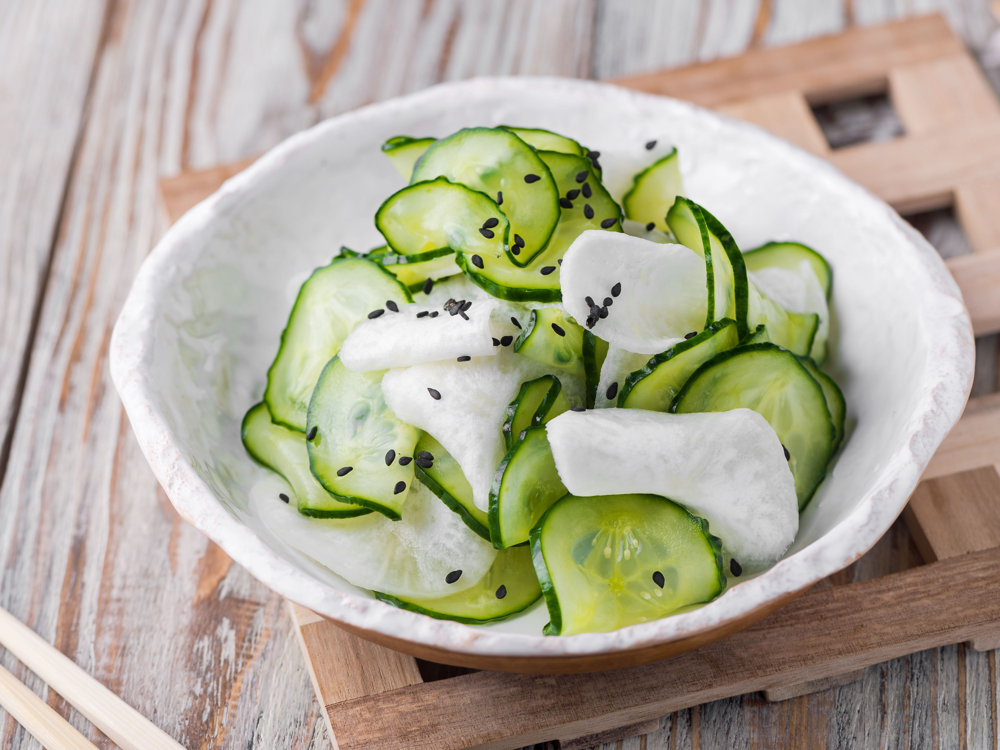

Cucumber Sunomono

Description
A Japanese recipe for cucumbers marinated in vinegar, sugar, salt and ginger.
Delicious and simple!
Ingredients
- 2 large cucumbers, peeled
- ⅓ cup rice vinegar
- 4 teaspoons white sugar
- 1 teaspoon salt
- 1 ½ teaspoons minced fresh ginger root
Steps
- Cut cucumbers in half lengthwise and scoop out any large seeds. Slice crosswise
into very thin slices.
- In a small bowl combine vinegar, sugar, salt and ginger. Mix well. Place
cucumbers inside of the bowl, stir so that cucumbers are coated with the
mixture. Refrigerate the bowl of cucumbers for at least 1 hour before serving.
Bon appétit !